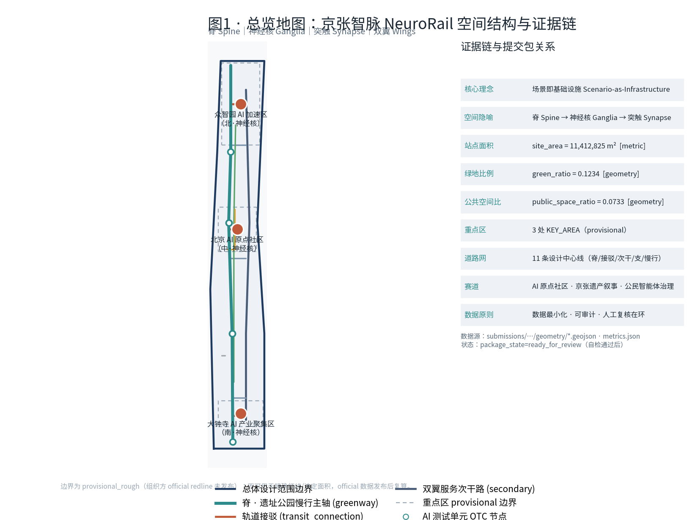
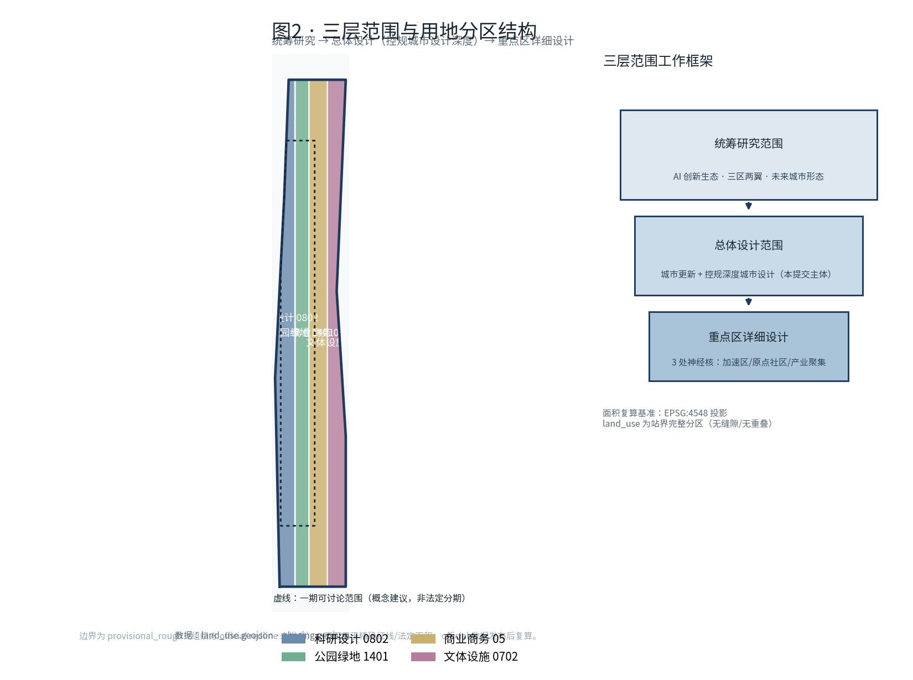
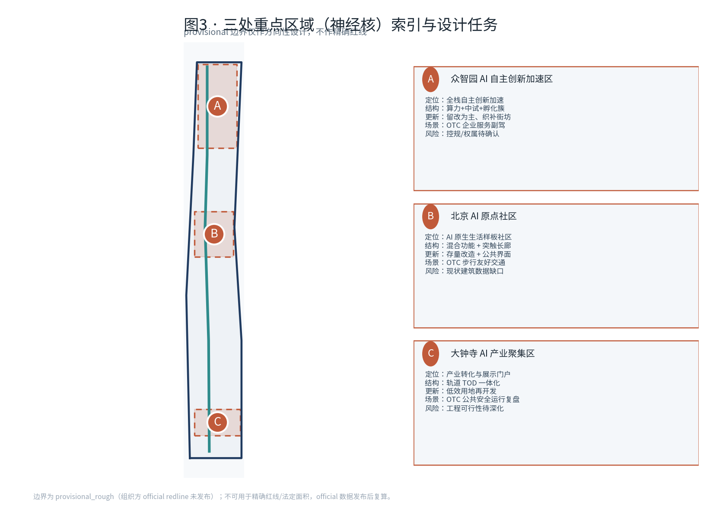
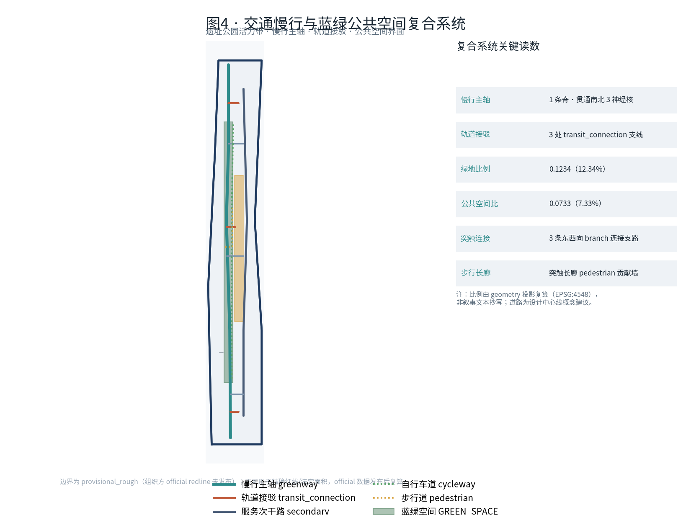
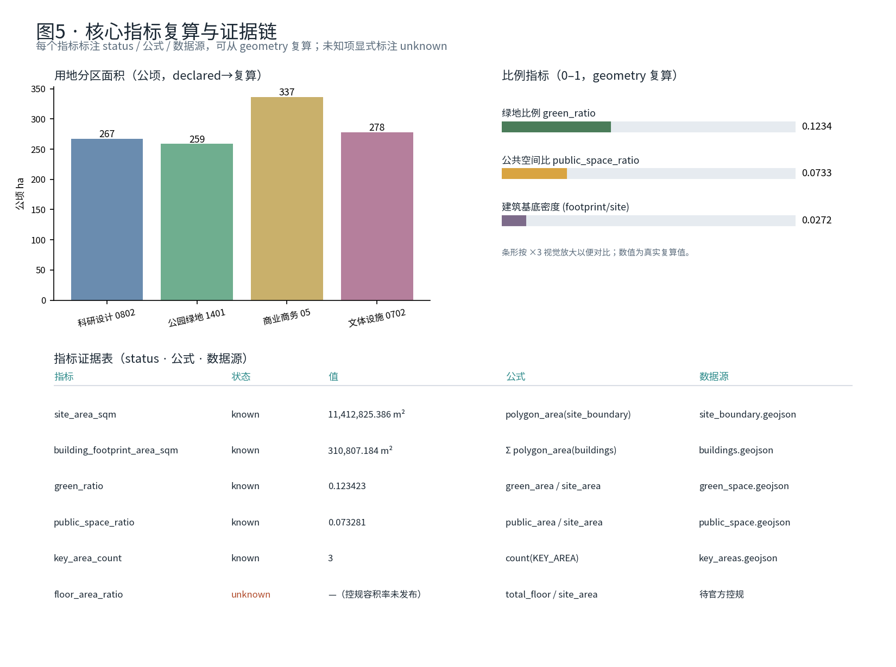

核心理念「场景即基础设施 / Scenario-as-Infrastructure」：每个 AI 节点都是可审计、数据最小化的开放测试单元（OTC）。空间以神经系统隐喻组织——脊 Spine（遗址公园慢行主轴）· 神经核 Ganglia（三处重点区）· 突触 Synapse（AI 场景节点）· 双翼 Wings。
脊 / 神经核 / 突触 / 双翼 的整体空间结构，叠合 11 条设计道路中心线与 AI 开放测试单元（OTC）节点。

统筹研究 → 总体设计（控规城市设计深度）→ 重点区详细设计；用地为站界完整分区，无缝隙、无重叠。

① 统筹研究范围：AI 创新生态、三区两翼、未来城市形态。
② 总体设计范围：城市更新 + 控规深度城市设计（本提交主体）。
③ 重点区详细设计：三处神经核，达规划综合实施方案深度。
科研设计 0802 · 267 ha 公园绿地 1401 · 259 ha 商业商务 05 · 337 ha 文体设施 0702 · 278 ha
provisional 边界仅作方向性设计，不作精确红线；每处形成「定位+结构+更新+场景+风险」小方案。

全栈自主创新加速；算力+中试+孵化簇；留改为主、织补街坊。
AI 原生生活样板社区；混合功能 + 突触长廊；存量改造 + 公共界面。
产业转化与展示门户；轨道 TOD 一体化；低效用地再开发。
京张遗址公园活力带为脊，串联轨道接驳、突触连接支路、自行车道、步行长廊与公共活动界面。

1 条脊 greenway · 3 条 transit_connection 轨道接驳 · 1 条 secondary 双翼次干 · 3 条 branch 突触连接 · cycleway/pedestrian/local_access 慢行与出入。
AI 研发示范建筑基底 31.08 ha（footprint）；更新项目以留改为主、低效用地再开发为辅，分近/中/远期推进，均为概念建议非法定分期。
≥10 张场景卡，其中 ≥3 张为 AI 产业测试验证场景 [TEST]；每张映射空间位置、数据边界、人工复核与运营主体。
所有比例指标由 geometry 投影复算（EPSG:4548），非叙事文本抄写；未知项显式标注。

| 指标 | 状态 | 值 | 公式 | 数据源 |
|---|---|---|---|---|
| site_area_sqm | known | 11,412,825.386 m² | polygon_area(site_boundary) | site_boundary.geojson |
| green_ratio | known | 0.123423 | green_area / site_area | green_space.geojson |
| public_space_ratio | known | 0.073281 | public_area / site_area | public_space.geojson |
| building_footprint_area_sqm | known | 310,807.184 m² | Σ polygon_area(buildings) | buildings.geojson |
| floor_area_ratio | unknown | —（控规容积率未发布） | total_floor / site_area | 待官方控规 |
公告 1.3/1.4/1.5 与 agent_taskbook agent.1–agent.6 的覆盖情况（详见 compliance_matrix.json）。
三大定位 · 五大功能 · 三区两翼协同回路。
「京张智脉 NeuroRail」品牌识别与视觉系统。
7 个全球 AI 创新生态案例可读摘要。
12 张 OTC 场景卡（4 张 TEST）+ 6 类画像。
智脉零点纪念广场 · 百年信号塔光柱 · 突触长廊贡献墙。
年度活动体系 · 开发者社区 · 场景开放运营（均为概念建议）。
提交前须 self_check_submission.py 返回 PASS：确定性校验 + 空间复核 + 视觉包装复核 + 专业证据复核。
官方公告与任务书（AGENT-TASKBOOK / SITE-PACKAGE）为 formal-ready；重点区 provisional 边界来自仓库 provisional_boundaries.geojson，标注 background/provisional，不得升级为官方红线或法定控制。
站界与三处重点区边界为 provisional_rough；控规容积率、现状建筑、权属与工程条件为待确认；所有分期、招商、活动与运营安排均为概念建议，非已定政府安排。official 数据发布后需复算空间图层与指标。